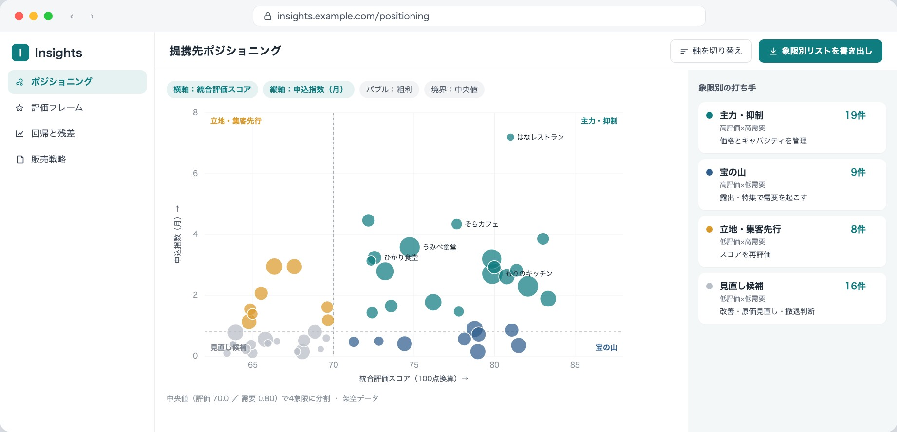

Demo — 架空データ01 / Decision Intelligence
暗黙知の経験則を、比較できる判断基準に。
0→1フェーズの事業で言語化されていなかった新規開拓の判断を、評価軸から自ら設計した評価フレームワークで定量化した。複数の評価軸と数十の評価項目からなる基準を一から定義し、全国規模の候補を同じ基準で採点。点数で交渉の優先順位を決める。
需要分析評価指標の設計地理データ事業開発
評価軸の設計と検証 — 定性的な判断を定量化し、実需要で較正する
手法の全体をレポートで読む →評価軸の設計と検証の要点
- 横軸合成評価指標
- 属人的だった評価観点を複数の評価軸に構造化し、各項目に段階評価のルーブリックを文章で定義。項目ごとに事業インパクトに応じた重みを付けて合算し、100点換算の合成指標にした。
- コスト要因
- 顧客の総支払額を価格帯で段階評価し、合成指標に組み込む。基準となる対象をアンカーにして、帯の幅を実際の価格分布に合わせて調整。原価データは一次情報 → 二次資料 → 推計の優先順位で採用し、推計値はそれと明示する。
- 縦軸需要指標
- 取引データから対象ごとの申込数を集計し、取り扱い開始からの経過期間で正規化した月次の需要指標。再抽出のたびにチェックサムで整合性を検証し、観測期間の短いデータは参考値として扱う。
- 検証① 予測妥当性
- 合成指標と販売実績の相関を確認。供給量の大きさが販売数を増幅する交絡を避けるため、稼働率でも検証し、販売を止めている対象を除外して補正した。
- 検証② ドライバー分析
- 評価軸ごとに需要との関係を分解し、需要を生んでいる軸と、ほとんど効いていない軸を特定した。
- 検証③ 残差分析
- 需要指標を合成指標で回帰し、残差の大きい対象を抽出。残差が特定の立地属性に偏っていたことを、重みを再設計する根拠にした。
- 意思決定への実装
- 必須要件による足切りのうえで、合成指標に基準値を設け、「積極的に進める」「立地需要で見極める」「個別に判断する」の3段階で判断できるようにした。基準値は、実績の稼働分布から設定している。判断材料のない項目は中央の値に置いて「要確認」とし、推測で加点しない。